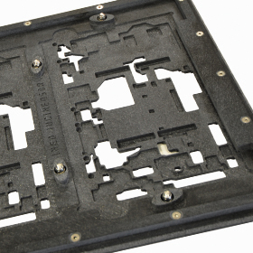

Overloaded PSU
Or what happens when you draw too much from your PSU.
For the power supply
For the sake of simplicity, let's only focus on the +12V rail. Let's say your power supply is able to deliver 10W of power for this rail. Your modules are drawing 1000mA. This would require 12W of power.
Depending on the power supply:
- Case 1: a fuse blows somewhere. The designer of the PSU could have "hardcoded" the 833mA (= 10W / 12V) limit somewhere with a fuse.
- Case 2: your power supply just overheats, with the risk of burning components and reducing their lifespan (especially electrolytics).
- Case 3: the output voltage is reduced to stay at the maximum power limit. In this case, this would correspond to an output voltage of 10V.
- Case 4: (with transformer/rectifier/regulator linear power supplies, reaching the maximum capacity of the rectifier's caps). The output voltage is no longer a constant signal, but a cut-up piece of sine-wave going between 8V and 12V, with an average value of 10V.
For the modules
Digital
The MCU and the digital section of digital modules run at 3.3V, usually generated through a linear or switched-mode regulator embedded in the module. In this case, running the module on 10V or a wobbly voltage will have no adverse effect: the linear regulator would simply dissipate less power and would happily generate 3.3V (cool!), the switched-mode regulator will switch with a different duty cycle and will maintain a 3.3V output.
Op-amps and co
In a gross approximation, op-amps, OTAs and integrated VCAs (2164s) are current-steering devices: their behaviour is fairly independent of their supply voltages (as long as the supply voltage is in the right range to allow their internal current sources to operate). A TL07x can run from +/- 3.5V to +/- 18V. What happens when you run them on a lower voltage (say +/-10 V instead of +/-12V) than planned by the designer? You simply get less headroom. This might cause clipping. For example, Plaits' output is roughly between -8V and +8V. If you run it on +/-5V, you'll get a clipped waveform!
The devil: references!
And now the thing that actually causes problems: voltage references. There are some circuits (such as the V/O scaling front-end of an analog filter, or the amplifier that converts a CV to a narrower range so that it can be processed by the ADC of a microcontroller) that require a source of a fixed, known DC voltage, say -5V.
There are two ways of getting this DC voltage.
The "wrong" way is to just use one of the supply rails and a voltage divider. In this case, if the supply voltage is tainted by noise, wobbliness, or is at the wrong level, the circuit will not operate normally. In the case of a VCO or filter, the range could be shifted (say it'll go from 0.2 to 200 Hz instead of 20 to 20kHz). With an overloaded rectifier-based power supply, you'll hear the mains frequency modulate the filter or VCO frequency!
The "correct" way is to use voltage reference ICs. This eliminates the noise, and allow the circuit to withstand variations in supply voltage (say 11.5V or 12.5V instead of 12V).
However, this is not completely robust. Many of the Mutable Instruments modules use a -10V voltage reference, with a current setting resistor computed for a minimum supply voltage of -11.5V. As long as the supply voltage is below -11.5V, the reference generates a perfect -10V and is not prone to any noise or wobbling. But if the negative supply voltage goes above -11.5V, the voltage reference will no longer deliver -10V and the same problem (shifted or modulated parameters) will occur. Now the $1000 question: not -5V references, or why not a lower current setting resistor to tolerate a wider range of variations on the negative supply? The reason is that it would waste more current on the -12V rail in normal operating conditions.
Reverse polarity protection
Two approaches can be found in the schematics:
-
Series polyfuse + shunt diode. When the current is applied in the wrong direction, it flows through the diode which acts like a short, sucking a lot of current from the PSU. Then the polyfuse "blows" and disconnect everything. Note that the polyfuse is absolutely necessary for this to work.
-
Series diode, preferably Schottky (low voltage drop). When the current is applied in the wrong direction, the diode blocks it. This protection scheme doesn't need a polyfuse.
So why did I stop using 1?
- With 1/, the small resistance of the polyfuse causes a voltage drop that varies with the current consumption of the module. The result is that the +12V supply for the op-amps slightly follows the current consumption of the digital section. Not good.
- What happens when a module is plugged backwards? With 2/, nothing happens, it's like an open circuit. With 1/, for a short time, the PSU will try to generate as much current as it can. I thought some PSUs might not like this at all. And there's the question of very beefy PSUs - some PSUs are now so beefy that they'd happily dump 2A of current - in other words, the shunt diode should tolerate very large currents.
Note that I continue using the polyfuse + shunt diode for circuits which uses the V2164 - since this IC absolutely needs to be protected against a missing V- - and this requires the shunt diode.
Manufacturing process
On a typical module, the only parts that are hand-soldered are the connector on the BOTTOM part of the board (on recent modules, there is only a power connector). All components are placed on the TOP side of the board, the board goes through a regular SMT assembly process, then the remaining PTH parts are inserted and the board is wave-soldered.
In the case of Yarns, Stages, and Beads, there are SMT parts on the BOTTOM part of the board, in that case, a wave solder pallet is made. It masks every SMT component and only exposes areas with through-hole solder pads. The board can be wave soldered.
This process has some drawbacks:
- There must be some minimal distance between the THT pins and the closest SMT component.
- The SMT components shouldn’t be taller than 4 or 5 mm. That’s why the crystal and electrolytic caps on Yarns are on the other side of the board.
- It’s costly (about 1.5k€).
